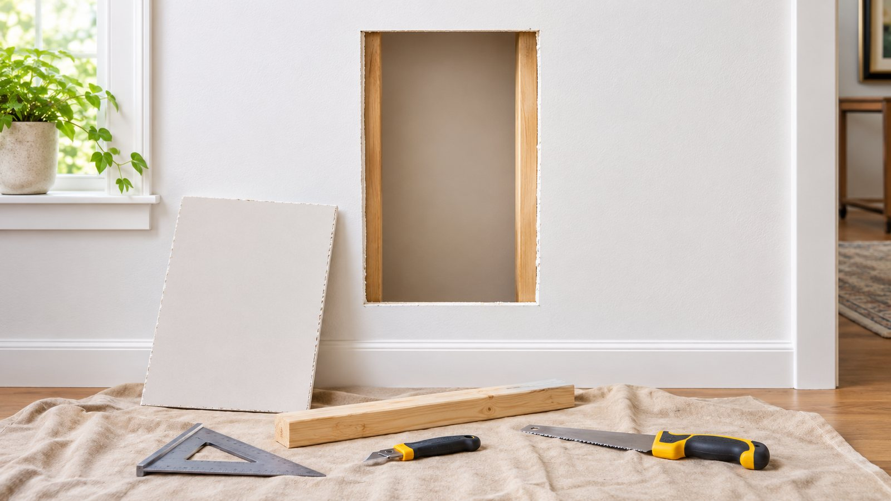
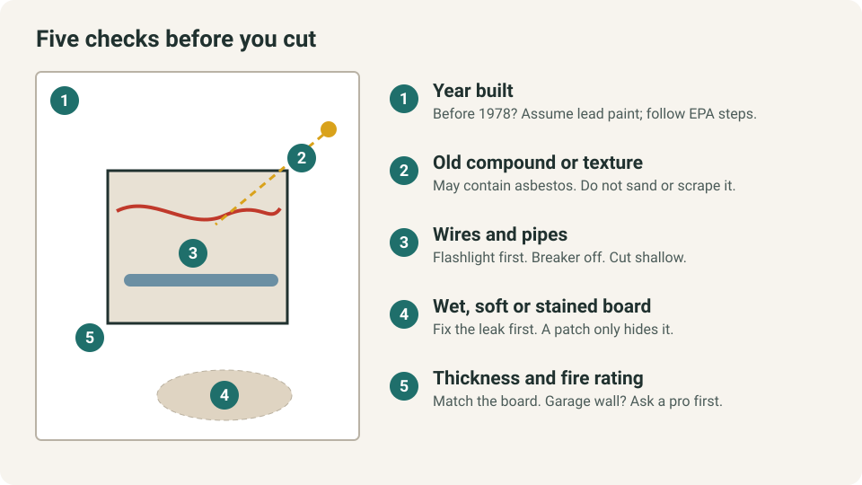
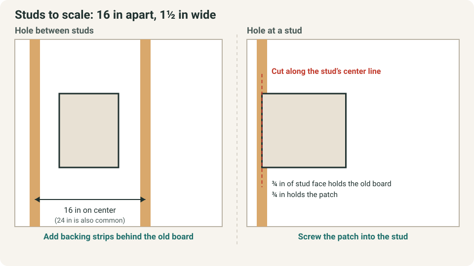
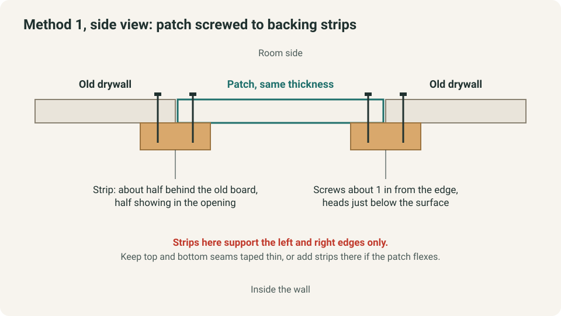
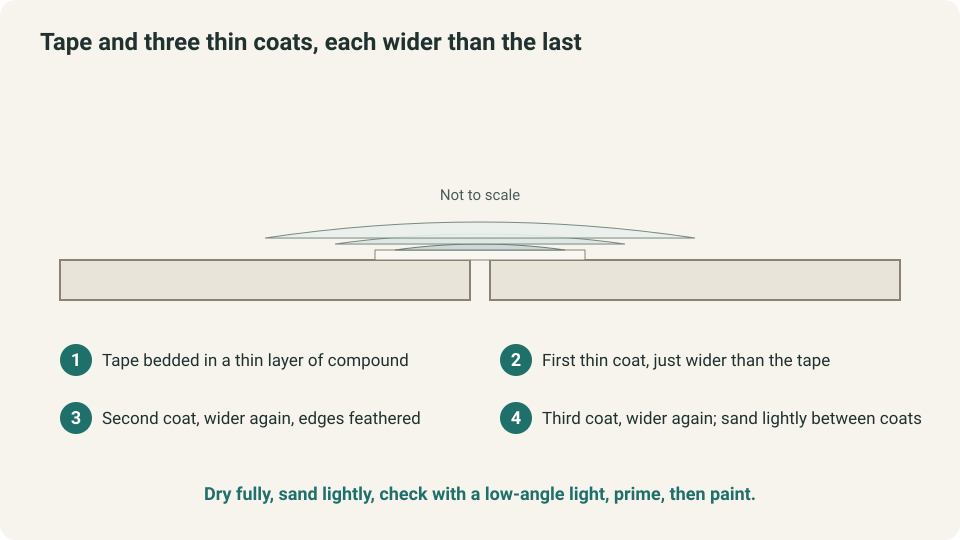

WEEKEND PROJECTS · DRYWALL REPAIR
How to Patch a Large Hole in Drywall (Check Behind the Wall First)

A moved appliance, a slammed door or an old vent opening has left a hole too big for a mesh sticker. Before you buy a patch, spend ten minutes finding out what is behind the wall and where the studs are. Those answers decide whether this is a safe weekend repair and which method fits. The steps below follow manufacturer and public-agency guidance and say plainly where to stop.
The quick answer
- Check first. In a home built before 1978, wall paint may contain lead. Older patching compounds and textured coatings may contain asbestos. Cutting and sanding can release either one.
- Look inside. Shine a flashlight through the hole for wires, pipes and wet or soft board before you cut anything.
- Match the method to the studs. A hole between two studs gets backing strips and a same-thickness patch. A hole with an edge near a stud is cut back to the stud’s center line so the patch can be screwed into solid wood.
- Finish in thin coats. Tape the seams, apply two or three thin coats of joint compound, each wider than the last, then prime and paint.
Quick plan
| Time | Several days, mostly waiting for compound to dry between coats. Pro Tool Reviews puts its example repair at about four days from start to finish |
| Cost | Modest if you own basic tools. The main purchases are a patch, backing strips, compound and primer |
| Best for | Gypsum drywall on wood studs, holes from a few inches up to the gap between two studs |
| Not for | Plaster walls, wet or moldy board, hazards you cannot rule out, or holes spanning several studs |
| Goal | A flat patch that disappears under paint |
Check behind the wall before you cut
These five checks take about ten minutes and decide whether the job is yours to do.

- Home age and lead. EPA says a home built before 1978 may have lead-based paint, and that repair or painting work there can easily create dangerous lead dust. EPA recommends hiring a lead-safe certified contractor. The federal renovation rule generally does not cover owners working on their own home, but it does apply if you rent out part of the home, so the dust hazard is the same either way. If you do it yourself, EPA’s steps include containing the work area, wetting surfaces before cutting or sanding, using wet-dry sandpaper or a sanding sponge, cleaning up with a HEPA vacuum and wet wipes, and never dry-sanding. If you cannot tell the home’s age, assume lead is present.
- Old compound or texture and asbestos. The U.S. Consumer Product Safety Commission says asbestos may be present in patching compounds used on wall and ceiling joints and in textured paint, and that their use was banned in 1977. You cannot tell by looking, and the agency lists sanding, scraping and drilling as ways these surfaces can release fibers. If you are in doubt, treat the material as asbestos or have a qualified professional sample it. The EPA and CPSC guidance adds that asbestos material that is more than slightly damaged, or that your project would disturb, needs a professional.
- Wires and pipes. Look through the hole with a flashlight. Cable in the cavity or a switch or outlet box nearby means cutting slowly and shallow, and switching off that circuit at the breaker first. Pro Tool Reviews’ example repair had an electrical wire behind the cutout. If you see damaged cable, bare copper or a wet or corroded pipe, stop and call an electrician or plumber.
- Wet, soft or stained board. A patch over a wet wall hides the problem. Find and fix the source first. EPA says that if wet materials are dried within 24 to 48 hours, mold generally will not grow. Stained or musty board points to a longer-running leak; start with our guides on how to reduce bathroom condensation or where to put water leak sensors.
- Thickness and fire rating. Measure the board’s thickness at the edge of the hole. Benjamin Moore and This Old House both say the patch must match it. If the wall or ceiling separates an attached garage from living space, or you know it belongs to a fire-rated assembly, ask your local building department or a pro before cutting, because the board type and installation matter.
What counts as a “large” hole?
Sources do not agree, which is why diameter alone is a poor guide.
| Source | Where “large” starts | Method it describes |
|---|---|---|
| USG Sheetrock repair-kit sheet (2004) | Over 2 inches, or water-damaged areas | Cut out the damaged section along the studs, use repair clips, tape all four sides |
| This Old House (updated June 2026) | Over 6 inches | Two 1×3 backing boards, a same-thickness patch, paper tape |
| Other how-to pages | 4, 6 or 8 inches | Mostly backing strips or a cut-out patch |
So choose by position: does the hole sit between studs, or reach one? Does it have solid, dry board around it?
Plan the cut around the studs
Most interior walls have studs 16 inches on center, and 24 inches is also common. Our guide to hanging large wall art explains how to find them with a stud finder. A stud is 1½ inches wide on its face.

- Mark the stud edges around the hole.
- Use a framing square to draw a rectangle that includes all cracked or crumbling board. Benjamin Moore squares off the hole so the edges are straight.
- If an edge of the rectangle lands within about an inch of a stud, extend that cut to the stud’s center line. This is a rule of thumb, not a code requirement. It leaves about ¾ inch of the stud face for the old board and ¾ inch for the new one. Pro Tool Reviews cuts back to about halfway across the side studs for the same reason.
- Cut only through the board with a utility knife or drywall saw, working slowly in case wires are close behind.
What you need
- Tools: tape measure, framing square, pencil, flashlight, utility knife and drywall saw, drill or driver, 6-inch and 10 to 12-inch drywall knives, sanding sponge, dust mask, eye protection, drop cloth.
- Materials: drywall of the same thickness, 1×3 or plywood backing strips, 1¼-inch drywall screws, joint tape (paper or fiberglass mesh), joint compound, primer and matching paint.
- Compound: use joint compound, not spackle, for a patch this size. A setting-type compound hardens by a chemical reaction. USG’s kit sheet says its 90-minute product hardens in about 85 to 130 minutes, so you can recoat the same day. Premixed compound dries by evaporation and needs more time, so keep coats thin.
Method 1: hole between studs, using backing strips

- Square the hole as described above.
- Cut two strips a few inches longer than the hole, one for each of two opposite edges, for example left and right. Slide each in so about half its width sits behind the old board and half shows in the opening. This Old House overlaps its boards about 1¼ inches into the hole.
- Screw through the old board into each strip about 1 inch from the edge. Benjamin Moore gives that spacing. Set the screw head just below the surface without tearing the paper face.
- Cut the patch from drywall of the same thickness with a small, even gap, and dry-fit it.
- Screw the patch to the strips. Two strips support only two edges, so keep the other two seams taped and thin. If the patch feels springy, add strips on the remaining edges too.
Method 2: hole at a stud, cutting back and screwing in
- Extend the cut to the stud’s center line so the stud shows along that edge.
- USG’s approach is to score along the stud with a utility knife and saw between studs, then remove old screws or nails along the cut edge.
- Cut the patch to fit and screw it to the stud, with screws set just below the surface.
- On the open side, use backing strips as in Method 1, or repair clips that slip onto the old board’s edge, as the USG kit sheet describes.
Tape and finish in thin coats

- Bed joint tape in a thin layer of compound over every seam. Do not overlap tape at corners, which USG warns against.
- Let the coat dry fully. This Old House suggests overnight for small patches.
- Sand lightly with a sanding sponge, then apply a second coat that extends past the first, as Benjamin Moore advises. Repeat for a third, wider coat. This Old House calls for two or three thin, smooth coats.
- Hold a work light at a low angle to the wall. Ridges and hollows show up; sand or skim them before you prime.
- Wipe off the dust with a damp cloth. Do not dry-sweep, and in a pre-1978 home keep to the EPA wet methods above.
- Prime the patch. USG recommends priming before decorating, and Benjamin Moore primes before two coats of paint. Primer helps the patch take paint like the rest of the wall.
- Paint the whole wall section, corner to corner, so an old, faded wall does not show a new patch. A lower sheen is more forgiving; see our guide to choosing paint finish for each room and the paint estimate in the home project calculator. If your wall is textured, matching the texture is a separate step, so test on cardboard first.
If the patch still shows
These are typical causes, not a diagnosis.
| Symptom | Likely cause | Fix |
|---|---|---|
| Raised ridge or picture-frame edge | Coats too narrow or knife ridges | Add a wider, thinner coat, feather the edge, sand and prime |
| Crack along a seam | Patch not backed, compound too thick or tape missing | Scrape out loose compound, re-tape, apply thin coats |
| Tape bubbles or lifts | Too little compound under the tape | Cut out the bubble, re-bed the tape with compound |
| Screw heads or torn paper show | Screws driven too hard | Reset the screw nearby, then cover it with compound |
| Patch sits proud or sunken | Patch thickness does not match the wall | Skim to level or replace the patch with matching board |
| Patch visible after paint | No primer, texture or sheen mismatch | Prime, then repaint the whole wall section |
When to stop and call a pro
- The home was built before 1978 and you would rather not follow EPA’s lead-safe steps. EPA recommends a certified contractor.
- You suspect asbestos in old compound or texture, or the asbestos material is more than slightly damaged.
- You find wires, pipes, wet or soft board, mold, or the wall is part of a fire-rated assembly.
- The hole spans several studs, sits overhead in a ceiling, or comes with sagging or cracking beyond the hole.
- The wall is plaster, not drywall, because that repair differs.
- You rent. Tell your landlord before cutting, since older buildings raise the lead and asbestos questions above.
Quick win: four notes before you shop
Write down the year the house was built, shine a flashlight through the hole, measure the board thickness and mark the nearest stud edges. Those four notes decide the method and the materials, and they stop most wrong purchases.
Common mistakes
- Patching over water damage instead of fixing the source.
- Cutting before checking for wires and pipes.
- Using a patch of a different thickness.
- Filling a big void with compound alone instead of a solid patch.
- One thick coat instead of several thin ones.
- Dry-sanding in an older home.
- Skipping primer.
FAQ
How big a hole can I patch without replacing a whole sheet of drywall?
Most homeowners patch holes that sit between two studs, which are usually 16 or 24 inches apart on center, without replacing a full sheet. If the damage runs across several studs, is wet or crumbling, or sits in a ceiling, plan on cutting back to the studs or hiring a pro. Sources draw the line for a “large” hole anywhere from 2 to 8 inches, so what is behind and beside the hole matters more than its diameter.
Can I fix a large hole with spackle or a mesh sticker?
Not on its own. This Old House says self-adhesive mesh suits holes up to about 1½ inches and a rigid metal or fiberglass patch suits holes up to about 6 inches. Anything larger needs a solid backing and a drywall patch first, with joint compound only finishing the seams.
Do I need backing behind the patch?
Yes, unless the patch is screwed directly to studs or held by repair clips. Without something solid behind the edges, a patch flexes and the seam cracks. Backing strips or studs also keep the patch flush with the wall.
How long before I can paint?
Wait until the last coat of compound is completely dry, then sand lightly, wipe off the dust and prime. Drying time depends on the compound, coat thickness and room humidity, so follow the label.
Does a home built before 1978 change anything?
Yes. EPA says older homes may have lead-based paint and that repair work can create dangerous lead dust. EPA recommends hiring a lead-safe certified contractor. If you do the work yourself, follow EPA’s do-it-yourself steps: contain the area, wet surfaces before cutting or sanding, and never dry-sand. If you are unsure of the home’s age, treat the paint as if it contains lead.
Why does my patch crack or show through the paint?
The usual causes are a patch with no solid backing, compound applied too thickly, missing tape, or coats that do not extend beyond the patch edges. A bare compound patch also takes paint differently from the wall, so prime first and repaint the whole wall section if the sheen still differs.
What this guide assumes
It covers gypsum drywall on wood studs in a typical U.S. home. It is not for plaster, tile backer or steel-stud walls, and it does not replace local code or a professional assessment. HomeProjectWise has not performed this repair; the steps are compiled from the manufacturer, agency and trade sources below, and where they differ the article says so.
Keep going
- How to choose paint finish for each room to pick a sheen that hides patches better.
- How to hang large wall art without damage to find studs and avoid new holes.
- How to reduce bathroom condensation if the board near a shower is soft or peeling.
- Where to put water leak sensors if a leak caused the damage.
Sources and last checked
Pages were read on 12 and 13 November 2026, and the CPSC asbestos statements were checked again on 14 November 2026. The USG sheet is dated 2004, so treat its sizes and product names as historical.
- EPA, “Lead-Safe Renovations for DIYers”: https://www.epa.gov/lead/renovation-repair-and-painting-program-do-it-yourselfers
- U.S. CPSC, “Asbestos in the Home”: https://www.cpsc.gov/safety-education/safety-guides/home/asbestos-home
- EPA, “A Brief Guide to Mold, Moisture and Your Home”: https://www.epa.gov/mold/brief-guide-mold-moisture-and-your-home
- USG, Sheetrock Brand Drywall Repair Kits application tips (2004): https://www.usg.com/content/dam/USG/pdpmovedocuments/sheetrock-drywall-repair-kits-application-tips-en-J1802.pdf
- This Old House, “How To Fix a Hole in a Wall”: https://www.thisoldhouse.com/walls/how-to-fix-a-hole-in-the-wall
- Benjamin Moore, “How to Fix a Hole in the Wall”: https://www.benjaminmoore.com/en-us/interior-exterior-paints-stains/how-to-advice/painting-101/fixing-holes-in-walls
- Pro Tool Reviews, “Pro Tip: How to Patch a Hole in Drywall”: https://www.protoolreviews.com/news/pro-tip-patch-hole-drywall/24985/